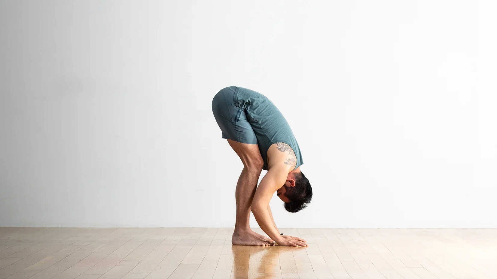
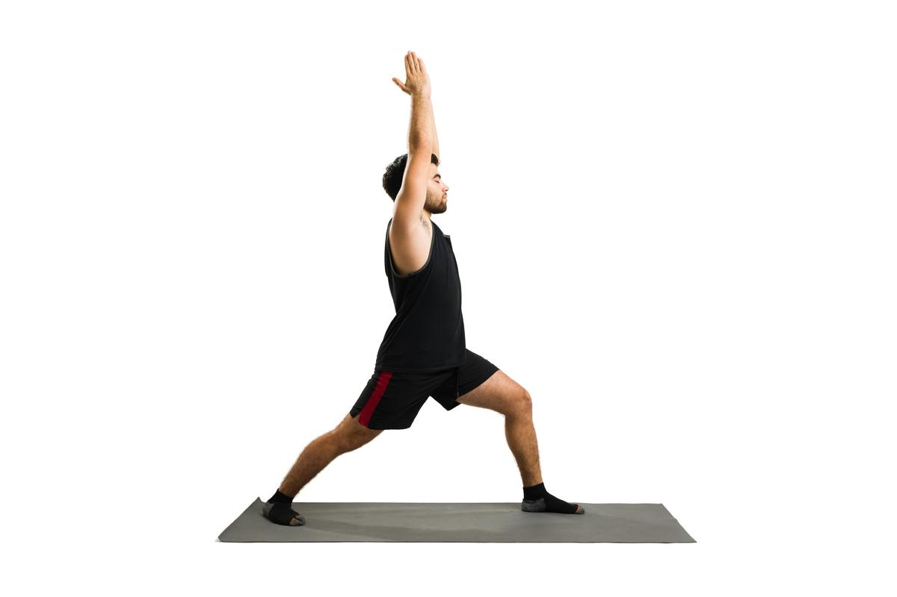
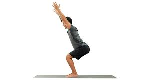
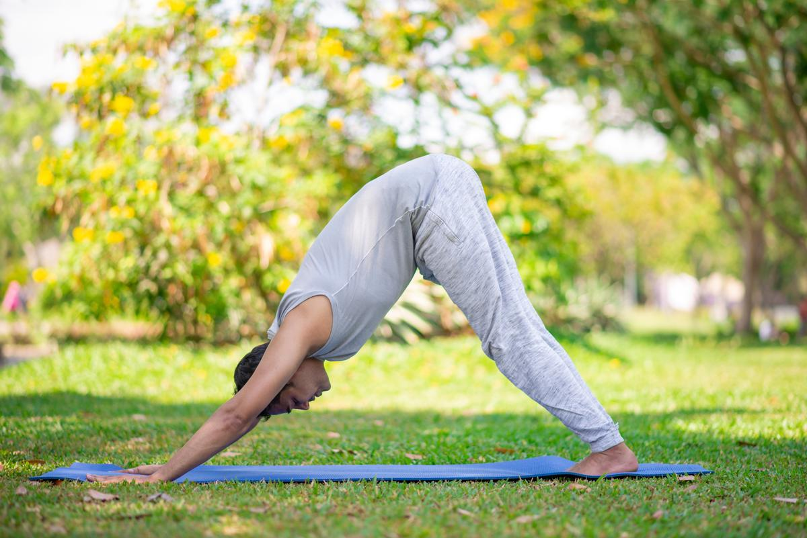
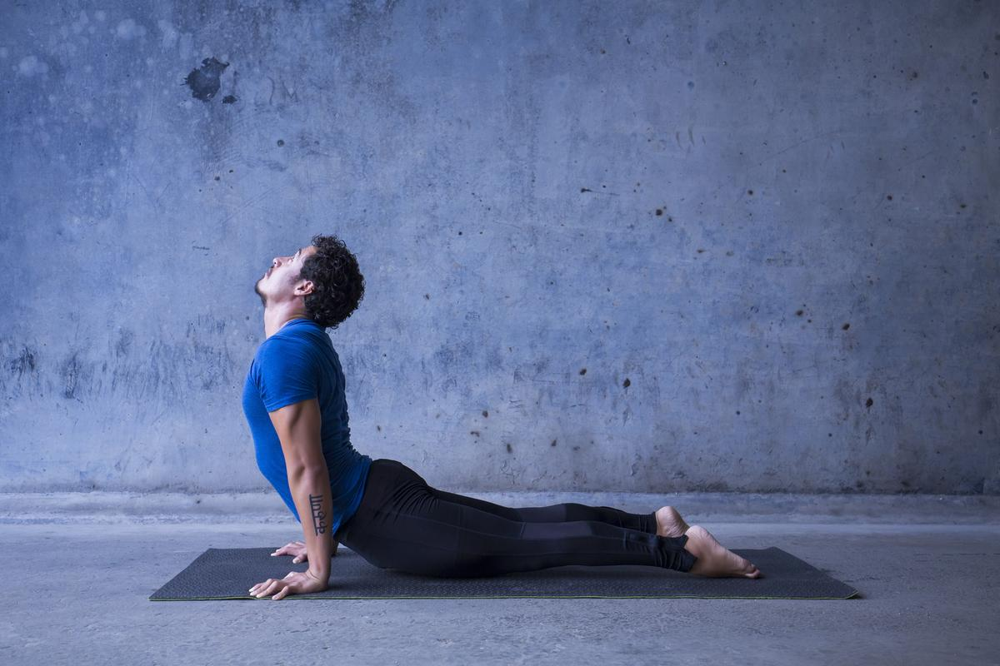
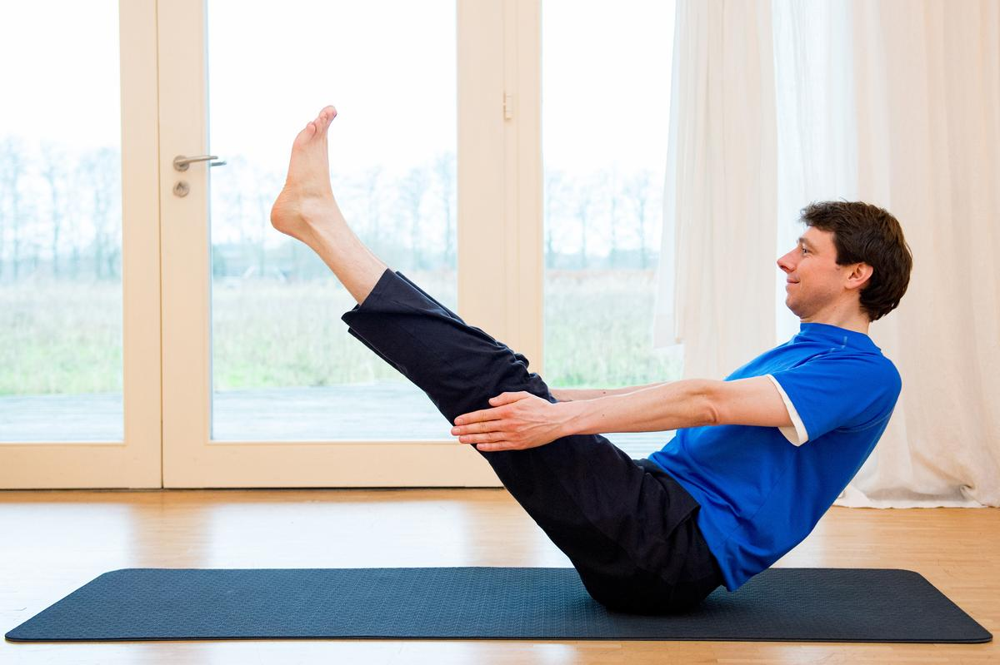
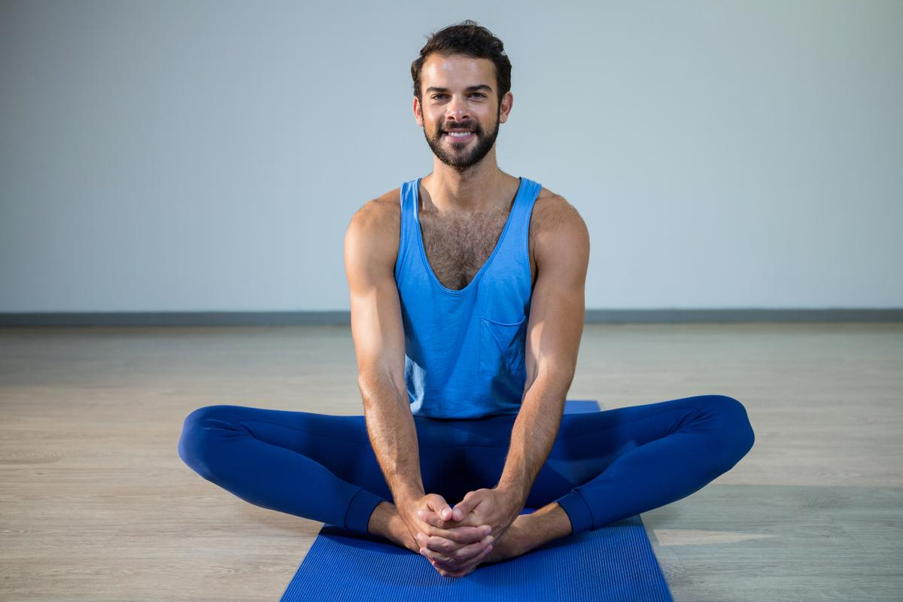
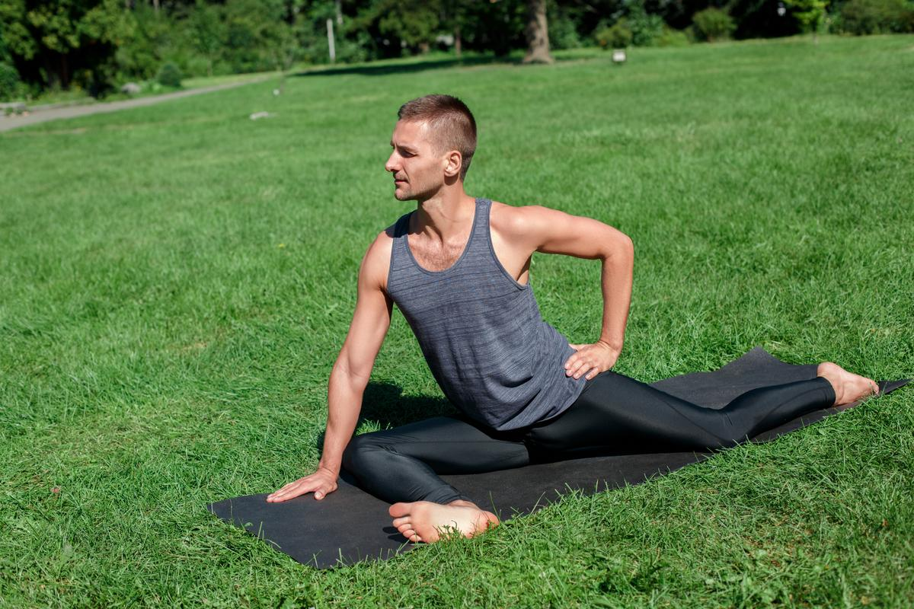

योग पुरुषों के लिए
योग सिर्फ महिलाओं के लिए नहीं है। आप वाई-क्रोमोसोम वाहक योगा मैट पर बैठकर और अपने शरीर को हिलाकर कुछ बड़े
पुरस्कार प्राप्त कर सकते हैं। वास्तव में, पुरुषों को महिलाओं की तुलना में कुछ योग मुद्राओं से और भी अधिक लाभ
हो सकता है, इसका श्रेय पुरुषों को आमतौर पर बड़ी और सख्त मांसपेशियों को जाता है।
1. उत्तानासन

आसन करने का तरीका
- उत्तानासन करने के लिए किसी साफ़ स्थान पर योगा मैट बिछा के ताड़ासन में या सीधे खड़े हो जाएं।
- इसके बाद साँस को अन्दर की ओर लेते हुए अपने दोनों हाथों को अपनी कमर पर रखें।
- अब अपनी साँस को बाहर की ओर छोड़ते हुये कमर के यहाँ से शरीर को मोड़ते हुयें नीचे की ओर झुकें।
- ध्यान रखें की अपने धड यानि अपने ऊपर के हिस्से को सीधा रखें बस कमर के यहाँ से मुड़ें।
- अपने दोनों हाथों को कमर हटा के जमीन को छूने का प्रयास करें।
- अपने सिर को स्वतंत्र अवस्थ में लटकने दें और अपनी गर्दन पर कोई खिचाव ना बनाने दें।
- अपने सिर को अपने पैरो से जोड़ने का प्रयास करें।
- अपनी क्षमता के अनुसार इस स्थिति में कुछ सेकंड के लिए रहें।
- अब अपनी प्रारंभिक आने के लिए अपने साँस को अन्दर लेते हुयें अपनी कमर को सीधा करते जाएं।
आसन के फ़ायदे
उत्तानासन से हमारे शरीर की रोग प्रतिरोधक क्षमता को बढ़ाने में मदद मिलती है.
ये आसन पीठ, हिप्स, पिंडली और टखनों को अच्छा स्ट्रेच देता है.
दिमाग को शांत करता है और एंग्जाइटी से राहत देता है.
सिरदर्द और इंसोम्निया की समस्या होने पर आराम देता है.
पेट के भीतरी पाचन अंगों को अच्छी मसाज देकर पाचन सुधारता है.
2. वीरभद्रासन

आसन करने का तरीका
- पैरों को ३ से ४ फुट की दूरी पर फैला कर सीधे खड़े हो जाएँ।
- दाहिने पैर को ९०° और बाएँ पैर को १५° तक घुमाएँ।
- जाँच करें- दाहिना एड़ी बाएँ पैर के सीध में रखें।
- दोनों हाथों को कंधो तक ऊपर उठाएं, हथेलिया आसमान की तरफ खुले होने चाहिए ।
- जाँच करें- हाँथ जमीन के समांतर हो।
- साँस छोड़ते हुए दाहिने घुटने को मोड़े।
- जाँच करें- दाहिना घुटना एवं दाहिना टखना एक सीध में होना चाहिए। घुटना टखने से आगे नहीं जाना चाहिए।
- सर को घुमाएँ और अपनी दाहिनी ओर देखें।
- आसन में स्थिर हो कर हाथों को थोड़ा और खीचें।
- धीरे से श्रोणि(पेल्विस) को नीचे करें. एक योद्धा की तरह इस आसन में स्थिर रहें और मुस्कुराते रहें।
नीचे जाने तक साँस लेते और छोड़ते रहें।
- साँस लेते हुए ऊपर उठें।
- साँस छोड़ते वक्त दोनों हाथों को बाजू से नीचे लाए।
- बाएँ तरफ से इसे दोहराएं.( बाएँ पैर को ९०° एवं दाये को १५° तक घुमाये)
आसन के फ़ायदे
हाथ, पैर और कमर को मजबूती प्रदान करता है।
शरीर में संतुलन बढाता है, सहनशीलता बढती है।
बैठ कर कार्य करने वालों के लिए अत्यंत लाभदायक है।
कंधो के जकड़न में अत्यंत प्रभावशाली है।
3. उत्कटासन

आसन करने का तरीका
- दोनों पैरों के बीच थोडा फासला रखते हुए सीधे खड़े हो जाएँ।
- हाथों को सामने की ओर फैलाते हुए हथेली ज़मीन की ओर, कुहनियां सीधी रहे। घुटनो को मोड़ते हुए धीरे से
श्रोणि को नीचे लाएँ जैसे कि आप एक काल्पनिक कुर्सी पर बैठे हैं।
- इसी स्थिति में बने रहें। उत्कटासन में अच्छा महसूस करने के लिए कल्पना करें कि बैठे बैठे आप अखबार पढ़
रहे हैं या लैपटॉप पर टाइपिंग कर रहे हैं।
- ध्यान रहे की आपके हाथ जमीन के समानांतर हों।
- सजगता के साथ रीढ़ की हड्डी को खींचते हुए सीधा बैठें, विश्राम करें।
- साँस लेते रहें और अखबार के पन्नें पलटते हुए राष्ट्रीय व् अन्तर्राष्टीय खबरों का आनंद लें।
- धीरे धीरे कुर्सी में और नीचे बैठे लेकिन ध्यान रहे कि आपके घुटने आपकी उँगलियों से आगे न जाएँ।
- धीरे धीरे नीचे जाते रहें और फिर सुखासन में बैठ जाएँ। अगर आप चाहे तो पीठ के बल लेट सकते हैं, और
विश्राम कर सकते हैं।
आसन के फ़ायदे
रीढ़ की हड्डी,कूल्हों एवं छाती की मांसपेशियों का अच्छा व्यायाम हो जाता है।
पीठ के निचले हिस्से को मज़बूती प्रदान करता है।
जांघो, एड़ी,पैर व् घुटनो की मांसपेशियों को ताकत मिलती है।
शरीर में संतुलन व् मन में दृढ़ता आती है।
4. अधोमुख श्वानासन

आसन करने का तरीका
- सबसे पहले जमीन पर एकदम सीधे खड़े हो जाएं.
- दोनों हाथों को आगे करते हुए नीचे जमीन की ओर झुक जाएं.
- झुकते समय आपके घुटने सीधे होने चाहिए.
- आपके दोनों हाथ कंधे के बराबर नहीं बल्कि इससे थोड़ा सा पहले झुका होना चाहिए.
- अब अपने हाथों की हथेलियों को झुकी हुई अवस्था में आगे की ओर फैलाएं और उंगलियां सीधी रखें.
- सांस छोड़ें और घुटनों को अधोमुख श्वानासन मुद्रा के लिए हल्का सा धनुष के आकार में मोड़ें.
- इसके बाद हाथों को पूरी तरह जमीन पर कंधों के नीचे से आगे की ओर फैलाए रखें.
- अब अपने घुटनों को जमीन पर थोड़ा और झुकाएं और कूल्हों को जितना संभव हो ऊपर उठाएं.
- ध्यान रखें कि सिर हल्का सा जमीन की ओर झुका होना चाहिए और पीठ के बराबर होना चाहिए.
- यह अवस्था अधोमुख श्वानासन की है.
आसन के फ़ायदे
अधोमुख श्वानासन करने से दिमाग शांत रहता है और हर तरह की चिंता से मुक्ति मिलती है.
इस आसन के अभ्यास से शरीर में रक्त संचार बढ़ाने में मदद मिलती है.
इस आसन के नियमित अभ्यास से पाचन तंत्र मजबूत होता है.
इस आसन से प्रभावित होने वाले अंगों में लीवर, किडनी और स्पलीन या तिल्ली शामिल हैं.
5. ऊर्ध्व मुख श्वानासन

आसन करने का तरीका
- सबसे पहले सपाट जमीन पर मैट बिछा लें और उसपर पेट के बल लेट जाएं
- इस दौरान पैर के पंजे का ऊपरी हिस्सा जमीन को छू रहा होना चाहिए
- दोनों बाहों की कोहनी को मोड़ें और हथेली को कांख के पास रखें
- अब गहरी लेते हुए हथेलियों के दम पर शरीर का अगला हिस्सा उठाएं
- ऐसे में घुटने से ऊपर का सारा हिस्सा जमीन से उठ जाना चाहिए
- अब धीरे-धीरे घुटनों को भी हवा में उठाना शुरू करें और पैर के पंजों पर वजन आने दें
- ऐसे में आपकी हथेलियों और पैर के पंजे के शीर्ष पर शरीर का सारा वजन पड़ जाता है
- इस दौरान गर्दन को ऊपर की तरफ मोड़कर आसमान की तरफ देखने की कोशिश करें
आसन के फ़ायदे
ऊर्ध्व मुख श्वानासन को करने से कंधे और छाती में खिंचाव आता है।
यदि आपको थकान का अनुभव हो रहा है तो इस आसन को करने से थकान दूर हो जाती है।
पाचन क्रिया को दुरुस्त करने और पेट की समस्याओं को दूर करने के लिए इस आसन का अभ्यास करना उत्तम होता है।
ऊर्ध्व मुख श्वानासन दमे से पीड़ित रोगियों के लिए लाभकारी होता है।
बैठने और खड़े रहने की मुद्रा में भी सुधार करने के लिए इस आसन का अभ्यास लाभकारी होता है।
6. नौकासन

आसन करने का तरीका
- पीठ के बल लेट जाएँ और दोनों पैरों को एक साथ जोड़ लें। दोनों हाथों को शरीर के साथ लगा ले।
- एक लंबी गहरी साँस लें और साँस छोड़ते हुए हाथों को पैरों कि तरफ खींचे और अपने पैरों एवं छाती को उठाएँ।
- आपकी आँखें, हाथों कि उंगलियाँ व पैरों कि उंगलियाँ एक सीध में होनी चाहिए।
- पेट की मासपेशियों के सिकुड़ने के कारण नाभी में हो रहे खींचाव को महसूस करें।
- लंबी गहरी साँसे लेते रहे और आसन को बनाये रखें।
- साँस छोड़ते हुए, धीरे से ज़मीन पर आ जाएँ और विश्राम करें।
आसन के फ़ायदे
कमर व पेट कि मासपेशियों को मज़बूत बनाता है।
हाथों व पैरों को मज़बूत बनाता है और सही आकार देता है।
हर्निया के रोगियों के लिए लाभकारी।
7. तितली आसन

आसन करने का तरीका
- पैरों को सामने की ओर फैलाते हुए बैठ जाएँ,रीढ़ की हड्डी सीधी रहे।
- घुटनो को मोड़ें और दोनों पैरों को श्रोणि की ओर लाएँ,पाँव के तलवे एक दुसरे को छूते हुए।
- दोनों हाथों से अपने दोनों पाँव को कस कर पकड़ लें। सहारे के लिए अपने हाथों को पाँव के नीचे रख सकते
हैं।
- एड़ी को जननांगों के जितना करीब हो सके लाने का प्रयास करें।
- लंबी,गहरी साँस ले, साँस छोड़ते हुए घुटनो एवं जांघो को फर्श की ओर दबाएँ।
- तितली के पंखों की तरह दोनों पैरों को ऊपर नीचे हिलाना शुरू करें। धीरे धीरे गति बढ़ाएँ।
साँस लेते रहें।
- जितना संभव हो उतनी तेज़ी से प्रक्रिया को करें| धीमा करते हुए रुकें,गहरी साँस ले,साँस छोड़ते हए आगे की
ओर झुकें,ठुड्डी उठी हुई,रीढ़ की हड्डी सीधी रहे।
- कोहनी से जांघों या घुटनो पर दबाव डाले जिससे घुटने एवंजांघ जमीन को छुए।
- जाँघो के अंदरुनी हिस्से में खिंचाव महसूस करें और लंबी गहरीसाँस लेते रहें।मांसपेशियों को अधिक विश्राम
दें।
- एक लंबी गहरी साँस ले और धड़ को ऊपर लाएँ।
- साँस छोड़ते हुए धीरे से मुद्रा से बाहर आएँ,पैरों को सामने की ओर फैलाएं,विश्राम करें।
आसन के फ़ायदे
जाँघो, कटि प्रदेश एवं घुटनो का अच्छा खिंचाव होने से श्रोणि एवं कूल्हों में लचीलापन बढ़ता है।
लम्बे समय तक खड़े रहने एवं चलने की वजह से होने वाले थकान को मिटाता है।
मासिक धर्म के दौरान होने वाली असुविधा एवं रजोनिवृति के लक्षणों से आराम।
8. कपोतासन

आसन करने का तरीका
- सबसे पहले सपाट फर्श पर मैट या कंबल बिछा लें और उस पर अधो मुख श्वानासन मुद्रा बना लें
- इसके बाद दाएं घुटने को मोड़ते हुए आगे लाएं और साथ ही पैर को मोड़ते हुए दाईं तरफ ले जाएं
- इस दौरान बाएं पैर के घुटनों को सीधा कर लें और पैर के पंजे पर शरीर का वजन बढ़ाते रहें
- आपके दाएं पैर की पिंडली फर्श पर रखी जानी चाहिए और आपके बाएं पैर के पास होना चाहिए
- इस दौरान आपके नितंब जमीन पर स्पर्श हो जाने चाहिए और यदि नहीं हो रहे हैं, तो बलपूर्वक कोशिश न करें
- बाएं टांग को पीछे सीधी करके रखें और ऐड़ी ऊपर व पैर का ऊपरी सिरा जमीन पर स्पर्श होना चाहिए
- दोनों हाथों को अपने कंधों के ठीक नीचे रखें और गर्दन व कमर को सीधा करें
आसन के फ़ायदे
कपोतासन आपके शरीर के विभिन्न प्रकार के दर्द को ठीक करने लिए लाभदायक होता है। इस आसन से आप विभिन्न प्रकार
के रोगों को भी ठीक कर सकते हैं। यह आसन साइटिका, ब्लड प्रेशर, पाचन की समस्या आदि को ठीक करता हैं।